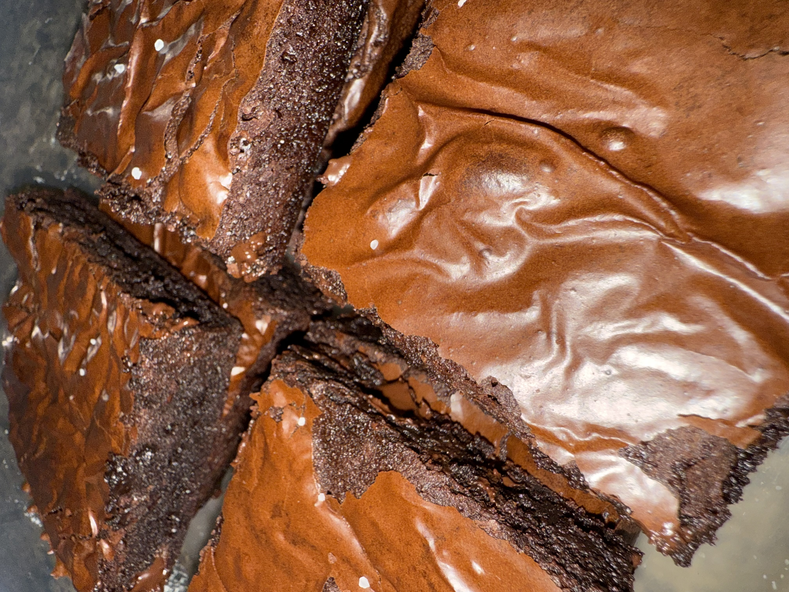

Brown Butter Brownies

An upgrade to your classic brownies with brown butter.
These are dense, fudgy, and loaded with chocolate!
This recipe uses a mix of cocoa powder AND melted chocolate to
creat the perfect chocolately dessert.
Ingredients
- 10 tablespoons (150g) unsalted butter, cut into 10 slices
- 6 ounces (170g) chopped semi-sweet chocolate, good
quality
- 3/4 cup (150g) granulated sugar
- 1/2 cup (100g) packed brown sugar, light or dark
- 3 large eggs, at room temperature
- 1 teaspoon pure vanilla extract
- 1/2 cup (40g) unsweeeted cocoa powder
- 1/2 cup (60g) all-purpose flour, spoon and leveled
- 1/4 teaspoon salt
- 1 cup (170g) semi-sweet chocolate chips or chunks
- flaky sea salt (optional - for topping)
Steps
- Preheat your oven to 350°F. Grease and line an 8x8 inch
baking pan with parchment paper, leaving a bit of paper
hanging over the sides to make it easier to pull the baked
brownies out. Set aside.
- In a medium saucepot, add butter slices and place onto a stove
burner set to medium heat. Heat, stirring frequently, until
the butter melts and turns a little goden brown. It will foam
quite a bit, but it should settle down once the butter is
ready to take off the heat. This will take about 5 to 8
minutes from start to finish
- Working relatively quickly so the butter doesn't continue
browningfrom the residual heat in the pan, whisk in chopped
chocolate until melted and smooth. Set aside to cool slightly
- In a large bowl, combine both sugars and eggs. Using an
electric mixer fitted with the whip attachment or a whisk
by hand (it is a workout though!) whisk together
sugars and eggs until the sugar is dissolved. This will
take around 5 to 7 minutes. To test if it's ready, rub
some of the mixture between your fingers. It shouldn't
feel grainy.
- Add your vanilla, cocoa, and slightly cooled brown butter
mixture to the egg mis. Whisk to combine.
- Add flour, salt, and chocolate chips to the wet ingredients.
Mix together until just combined. Take care not to
overmix!
- Pour your batter into the prepared bakng pan. Bake in the
center of your preheated oven for 25 to 40 minutes, or
until the top is no longer shiny and a skewer inserted
into the center comes out with moist crumbs.
- Cool completely in the pan. Once cool, use the overhanging
parchment paper to pull the brownies out and cut into 16
slices. (Optional) sprinkle some flaky sea salt on top before serving!
Home